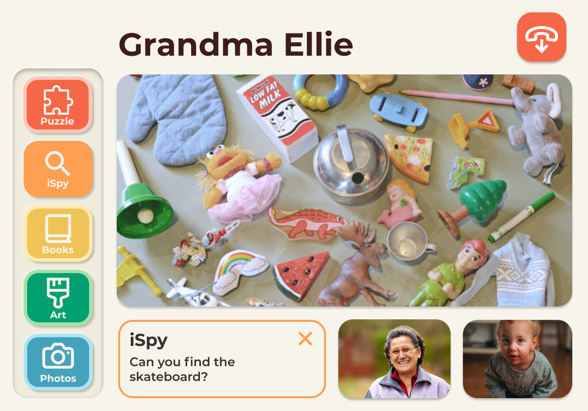
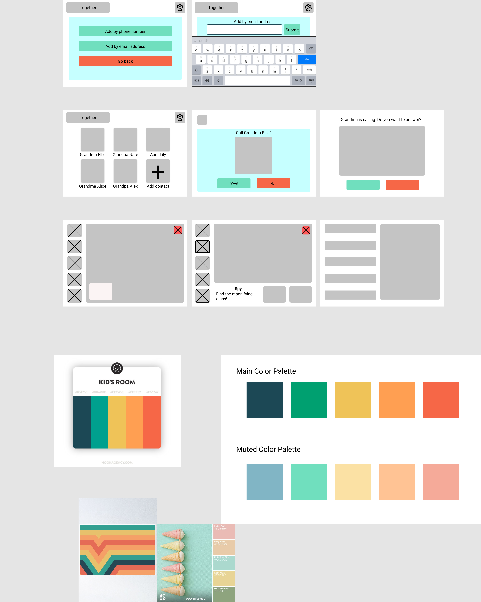
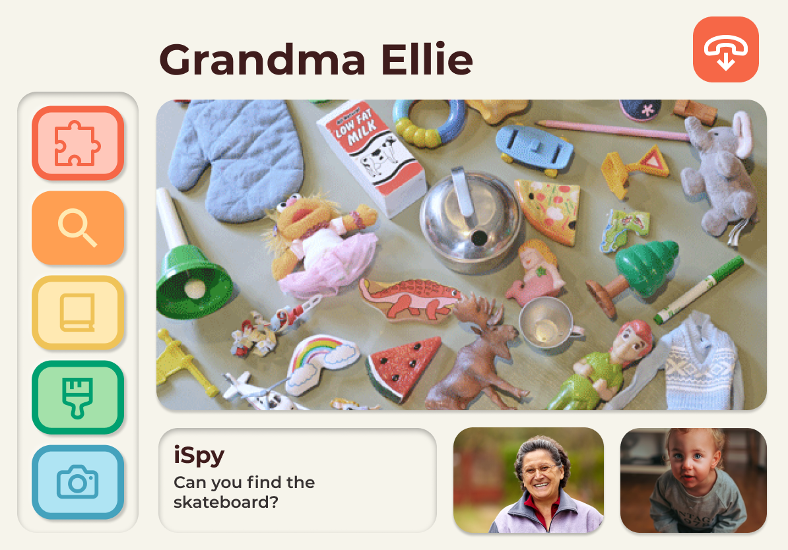
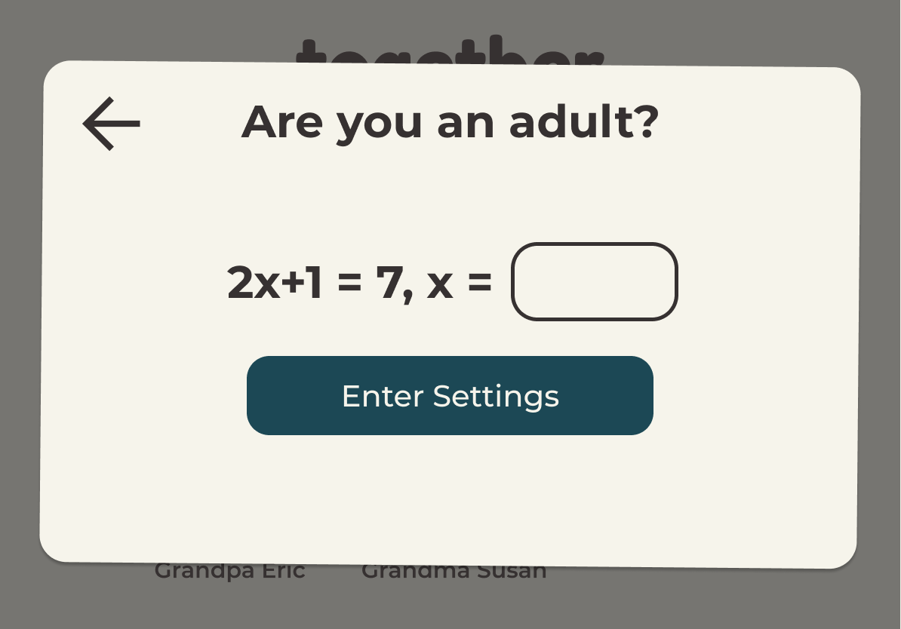
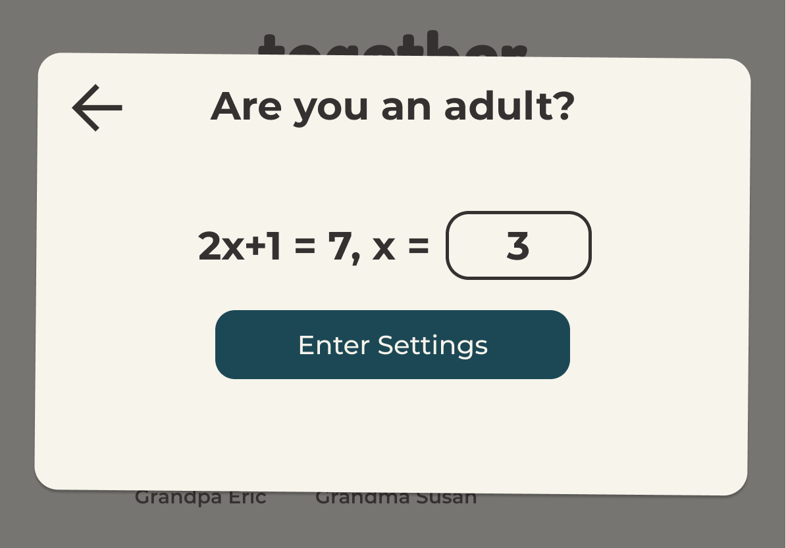
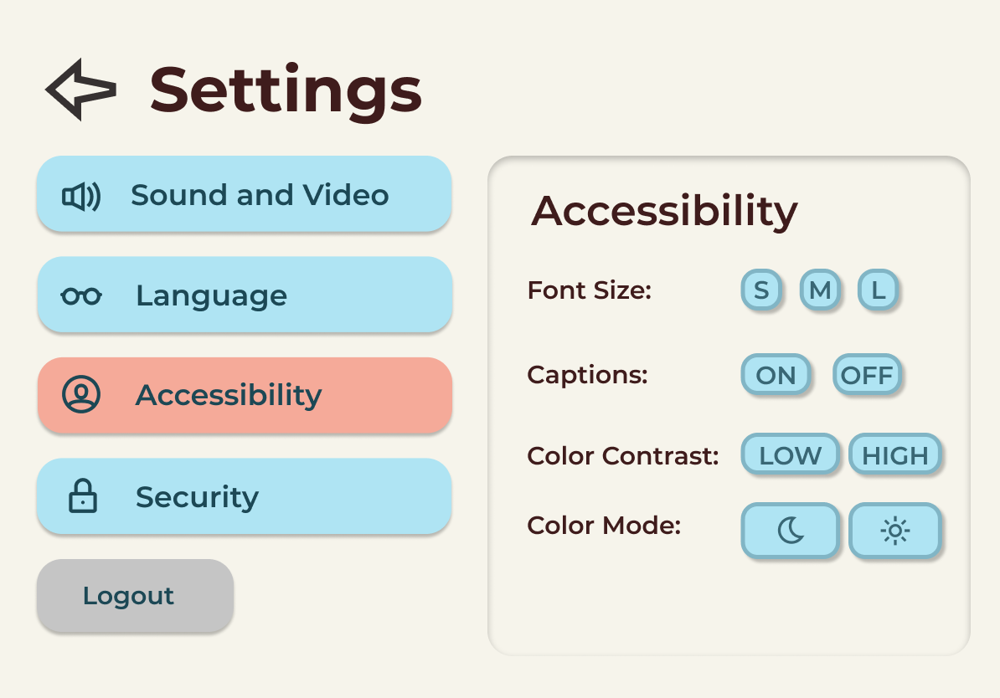
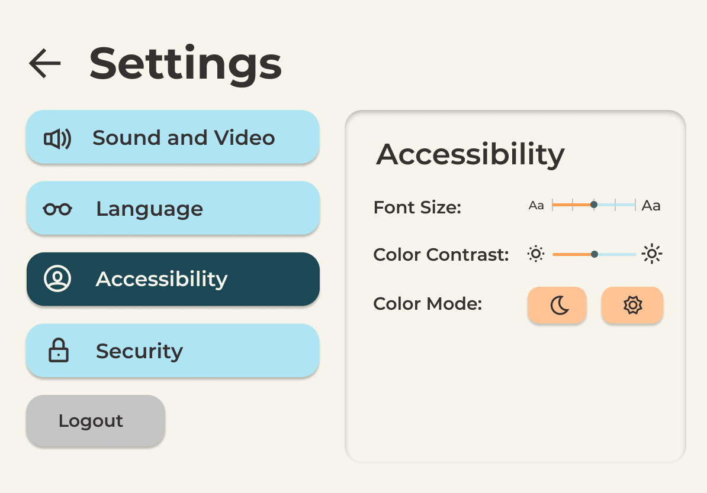

<!doctype html>
<html lang="en">

</html>

<head>
  <!-- Required meta tags -->
  <meta charset="utf-8">
  <meta name="viewport" content="width=device-width, initial-scale=1, shrink-to-fit=no">

  <!-- Bootstrap CSS -->
  <link rel="stylesheet" href="https://stackpath.bootstrapcdn.com/bootstrap/4.5.2/css/bootstrap.min.css"
    integrity="sha384-JcKb8q3iqJ61gNV9KGb8thSsNjpSL0n8PARn9HuZOnIxN0hoP+VmmDGMN5t9UJ0Z" crossorigin="anonymous">

  <title>Personas</title>
  <link rel="stylesheet" href="index.css">
  <!-- TODO: add additional links here! e.g. fonts, icons, more stylesheets, etc. -->
  <meta content="width=device-width, initial-scale=1" name="viewport" />
  <meta charset="utf-8">
</head>

<body>
  <!-- TODO: put your HTML code here! -->
  <div class="nav-wrapper">
    <nav class="navbar navbar-expand-lg navbar-light" style="width: 100%">
      <a class="navbar-brand" href="#">
        <h1>Kelly Wang</h1>
      </a>
      <button class="navbar-toggler" type="button" data-toggle="collapse" data-target="#navi">
        <span class="navbar-toggler-icon"></span>
      </button>

      <div class="collapse navbar-collapse" id="navi">
        <ul class="navbar-nav">
          <li class="nav-item">
            <a class="nav-link" href="../index.html">Projects <span class="sr-only">(current)</span></a>
          </li>
          <li class="nav-item">
            <a class="nav-link" href="../about.html">About</a>
          </li>
      </div>
    </nav>
  </div>
  <div class="heading">
    <h1 style="padding-top: 10px">Interactive Design</h1>
    <h3 style="padding-bottom: 10px"> Together</h3>
  </div>
  <div class="wrapper">
    <div class="intro">
      <div class="photo-div">
        
      </div>
      <div class="intro-card">
        <div class="flex-col">
          <h2>Introduction</h2>
          <p>
            In this project, we practiced iterative design by creating a prototype of a tablet app based
            on the
            concept of Together Video Call. We focused on as
            couple main goals: creating a simple interface that is easy to learn and simple to
            understand and ensuring
            that users have a safe and enjoyable experience. From our original sketch to our current
            prototype, we’ve
            received a lot of feedback about user flow, design choices, and making each element clear
            and purposeful.
            Our figma prototype walks you through the process of making an account, adding a contact,
            calling a
            grandparent, and interacting with the different activity options available during the video
            call. For
            accessibility, we have included an interactive settings page in this prototype that is
            reachable once you
            exit the call. Since our app primarily serves an elderly population in addition to children,
            we designed
            our interface to be simple to understand and easy to learn. In this mockup, we want to
            showcase the wide
            array of bonding activities available, as well as the app’s emphasis on usability for its
            audience.
          </p>
        </div>
      </div>
    </div>
    <div class="body-card">
      <div class="flex-col">
        <h2>The Assignment</h2>
        <p>
          We were tasked to design an interface for an emerging startup. We chose the Video App called
          Together
          (Description Below). We created sketches and wireframes. Then, we created an interactive mockup
          which we
          brought to our studio section for critique. After recieving feedback, we implemented the changes. We
          then
          sent the mockup to UserTesting for more feedback and emailed the startup a link to our prototype.
        </p>
        <h4>
          Together Video App Blurb:
        </h4>
        <p>
          For kids who are active and playful, a relatively static interface like Facetime and Zoom might not
          be the
          most engaging way to communicate. For grandparents who aren’t technologically adept, these
          interfaces can
          be overwhelming and unclear. Together is a video calling app that connects kids to their
          grandparents
          and long-distance relatives by offering activities like reading a book and playing game over the
          screen.
        </p>
      </div>
    </div>
    <div class="body-card">
      <div class="flex-col">
        <h2>Sketching and Wireframes</h2>
        <h4>
          Sketches:
        </h4>
        
        <br>
        <br>
        <h4>
          Looking at our sketches, we felt like we had mostly focused on three main screens, and a
          summary of our discussion is listed below:
        </h4>
        <h5>Main Home Screen:</h5>
        <ul>
          <li>Considered using a family photo, but agreed that it made the page too busy</li>
          <li>
            Considered putting games on the home page, but we wanted to make it clear that they
            occurred within video calls
          </li>
          <li>
            Thought about the process of adding contacts and incorporated a visual plus button to
            add contacts from the home page
          </li>
          <li>
            Thought about including green call buttons on every profile picture so it would be
            clear that pressing on them would open a call versus having a click on the profile
            picture automatically call the person
          </li>
        </ul>
        <h5>In-Call Screen:</h5>
        <ul>
          <li>
            Considered the placement of the activity bar on either the bottom or left-hand side of
            the screen
          </li>
          <li>Thought about having the activities in an expandable drawer</li>
          <li>
            Considered a group call mode but realized it may be difficult for users to navigate
          </li>
        </ul>
        <h5>Settings:</h5>
        <ul>
          <li>
            Though it wasn’t in our sketches, we also discussed the need for flexibility due to
            users ranging from children, parents, to grandparents
          </li>
          <li>
            We decided to have one version of the app instead of having multiple different
            interfaces to suit different users and “admins”.
          </li>
        </ul>

        <h4>
          Low-Fidelity Wireframes:
        </h4>
        
      </div>
    </div>
    <div class="body-card">
      <div class="flex-col">
        <h2>Mockup</h2>
        <h4>
          Critique Feedback:
        </h4>
        <ul>
          <li>More specific labeling and directions for the activity icons</li>
          <li>Making the app kid-safe, protecting the settings</li>
          <li>Consider a parental perspective in terms of protecting children</li>
          <li>Show physical differences for font size</li>
          <li>Some settings don't really make sense as buttons</li>
          <li>No clear way to exit from activities</li>
          <li>General compliments on aesthetic and interface :)</li>
        </ul>
        <br>
        <br>
        <h4>
          Before:
        </h4>
        <br>
        
        <br>
        <br>
        <h4>
          After:
        </h4>
        <br>
        
        <br>
        <br>
        <br>
        <h4>The changes we made after our critique session are summarized below:</h4>
        <br>
        <h5>In Call Activities</h5>
        <br>
        <div class="comparison">
          <div class="photo-div"></div>
          <div class="photo-div"></div>
        </div>
        <br>
        <p>
          We added text labeling each button, added contrast to the colors of each button, and
          created an ‘x’ in the description area that allows the user to exit the activity.
        </p>
        <br>
        <br>
        <br>
        <h5>Children Safety Features</h5>
        <br>
        <div class="comparison">
          <div class="photo-div"></div>
          <div class="photo-div"></div>
        </div>
        <br>
        <p>
          We wanted to ensure that parents had some control over how kids could interact with the
          app, and after debating possible solutions, we included a math problem before granting
          access to the settings. We thought that this would provide enough protection to deter
          kids, but not make it a hassle for grandparents and parents to access.
        </p>
        <br>
        <br>
        <br>

        <h5>Clearer Options in Settings</h5>
        <br>
        <div class="comparison">
          <div class="photo-div"></div>
          <div class="photo-div"></div>
        </div>
        <br>
        <p>
          We renamed some settings and included sliders instead of only buttons. For example
          “contact filter” was renamed “can add new contacts”, and font size and color contrast
          are sliders. We also made the changes in text size more obvious.
        </p>
        <br>
        <br>
        <br>
        <h4>
          <div style="text-align: center;"><a
              href="https://www.figma.com/proto/Nv7hsnsh9YTkux0ZlNNbaz/Together-Iterative-Design?node-id=126%3A776&scaling=min-zoom"
              target="_blank">Link to Mockup</a></div>
        </h4>
        <br>
      </div>
    </div>
    <div class="body-card">
      <div class="flex-col">
        <h2>User Testing</h2>
        <h4>
          User Testing Description:
        </h4>
        <p>
          Thank you very much for helping our team test our interactive mockup of the family-oriented
          video chat
          application, Together. This is an interactive mockup of a tablet app instead of an actual
          fully-functionable
          website. Some features are not fully fleshed out but we hope that users could try to imagine how
          the
          features may respond when the mockup is taken to completion.
          <br>
          The website Figma is hosting our application, so please only interact with something in the
          white box!
          <br>
          Please navigate the application as if you are a parent helping out your child call their
          grandparent to play
          a game of iSpy.

        </p>
        <h4>
          User Testing Tasks:
        </h4>
        <ul>
          <li>Please create an account</li>
          <li>Please go to settings and turn off background music</li>
          <li>Please simulate adding a new contact by phone number</li>
          <li>Please call Grandma Ellie</li>
          <li>Please play a game of iSpy with Grandma Ellie</li>
          <li>Please read a book with Grandma Ellie</li>
          <li>Please hang up the call</li>
        </ul>
        <h4>
          User Testing Post-Test Questions:
        </h4>
        <ul>
          <li>Which task was the most confusing to accomplish?</li>
          <li>What do you think about the visual design and layout of the application?</li>
          <li>Are there any elements which you find redundant? Are there any elements you think the
            application is
            missing?</li>
          <li>Would you use this application with your family? Please explain.</li>
        </ul>
        <h4>
          User Testing Results
        </h4>
        <br>
        <h5>User 1's Video</h5><iframe src="https://drive.google.com/file/d/1IfFWwGncmyoXSHRwqu32P5Mh0SVX2WLe/preview"
          width="640" height="360"></iframe>
        <br>
        <h5>User 2's Video</h5>
        <iframe src="https://drive.google.com/file/d/12ZzFyFOb1cGhVTDxfOTqMd2NIsOdGFcN/preview" width="640"
          height="360"></iframe>
        <br>
        <h5>User 3's Video</h5>
        <iframe src="https://drive.google.com/file/d/1PEmv0F8KK_ugAwbzT2TRmHNmn_GwU-aH/preview" width="640"
          height="360"></iframe>

        <br>
        <br>

        <p>
          We conducted two rounds of testing because during the first round, our mockup had errors that
          inhibited
          users from giving relevant feedback. Our initial user-testing prompted the testers with steps
          that were
          inconsistent with the given mockup (specifically, it started on a call and we asked users to log
          in). This
          ordering mistake gave us results that illuminated fundamental usability issues with our Figma
          models. We
          decided to conduct a second round of testing, with an adjusted mockup that would better allow
          users to give
          appropriate feedback of our app, instead of feedback about the faulty mockup. In our second set
          of results,
          we observed much more streamline results.
        </p>
        <h4>
          General Feedback
        </h4>
        <p>
          We expected users to be able to log into the app, make a call, and explore a few options we had
          for in-call
          activities as these were our app’s main features. Most users were able to complete the tasks
          easily, and we
          also received some compliments about how simple & easy to use our interface was.
          <br>
          <br>
          Parents expressed an immediate understanding and excitement of the concept and could see how
          they could use
          it with their children and their grandparents. One especially enthusiastic user said, <i>“I love
            the idea of
            this. This is so smart. I love this. Grandma lives so far away, so how do you interact with
            Grandma? How
            do
            you play games with Grandma? How do you do anything besides ‘How was your day? How was
            school?’ This gives
            you the platform and the games to play while you’re actually interacting!”</i>

          <br>
        <h4>
          Subtask Performance
        </h4>
        <ul>
          <li>Two users were confused by whether or not they had finished the task of adding a contact due
            to lack of
            feedback after task completion.</li>
          <li>They were also confused as to whether they had correctly identified the location to execute
            certain
            tasks, like inactivating music, due to naming disparities among the screens and
            instructions. Some buttons
            were also not fully functional in our prototype.</li>
          <li>Another was confused because they couldn’t actually fill in the information needed for
            tasks, as we used
            dummy information to fill in inputs for them.</li>
          <li>Confused as to whether or not clicking a profile picture in the home screen would initiate a
            video call,
            since there was no clear indication that it would do so.</li>
          <li>Unfortunately, we didn’t mock up the entire process of adding a contact, and a user
            commented that she
            would’ve liked to see the added contact appear on the screen.</li>
        </ul>
        <br>
        <h4>
          Potential Interface Changes
        </h4>
        <ul>
          <li>Consider changing Settings color scheme from blue/orange to red/green or something more
            indicative of
            what is the off-versus-on states</li>
          <li>Make sure all the settings and functions are named correctly across all screens and
            instructions so it
            is clear what they do (i.e. Activity Music vs Background Music)</li>
          <li>Make it more clear that when clicking a contact photo, it will enable you to call them</li>
          <li>Two users were curious about adding a simple chat feature and being able to interact with
            multiple users
            at the same time.</li>
        </ul>
      </div>
    </div>
    <div class="body-card">
      <div class="flex-col">
        <h2>Conclusion and Takeaways</h2>
        <p>
          This group project allowed me to experience the dynamics of working on a design together with
          other people.
          I realized that communicating my thoughts and ideas with fellow UIUX students is not a trivial
          task. We set
          up many calls over zoom to discuss the design. We would go and make design adjustments based on
          feedback
          from each other, our peers, and our industry reviewer guests. I believe that this is a truly
          unique project
          because it is the product of four creative minds.
        </p>
        <h4>
          Takeaways:
        </h4>
        <ol>
          <li>I learned how to collaborate with others on a UIUX project.</li>
          <li>This project simulated the process of revising the design bit-by-bit to better-fit users
            needs.</li>
          <li>We recieved positive feedback but some areas we could improve are consistency between icons,
            clearer instructions, and proposing a better security question. </li>
          <li>Sincerely thank Jessie, Ethan, and Connie for working with me on this project! </li>
        </ol>
      </div>
    </div>
  </div>
</body>

<!-- Optional JavaScript -->
<!-- jQuery first, then Popper.js, then Bootstrap JS -->
<script src="https://code.jquery.com/jquery-3.5.1.slim.min.js"
  integrity="sha384-DfXdz2htPH0lsSSs5nCTpuj/zy4C+OGpamoFVy38MVBnE+IbbVYUew+OrCXaRkfj" crossorigin="anonymous"></script>
<script src="https://cdn.jsdelivr.net/npm/popper.js@1.16.1/dist/umd/popper.min.js"
  integrity="sha384-9/reFTGAW83EW2RDu2S0VKaIzap3H66lZH81PoYlFhbGU+6BZp6G7niu735Sk7lN" crossorigin="anonymous"></script>
<script src="https://stackpath.bootstrapcdn.com/bootstrap/4.5.2/js/bootstrap.min.js"
  integrity="sha384-B4gt1jrGC7Jh4AgTPSdUtOBvfO8shuf57BaghqFfPlYxofvL8/KUEfYiJOMMV+rV" crossorigin="anonymous"></script>

</body>